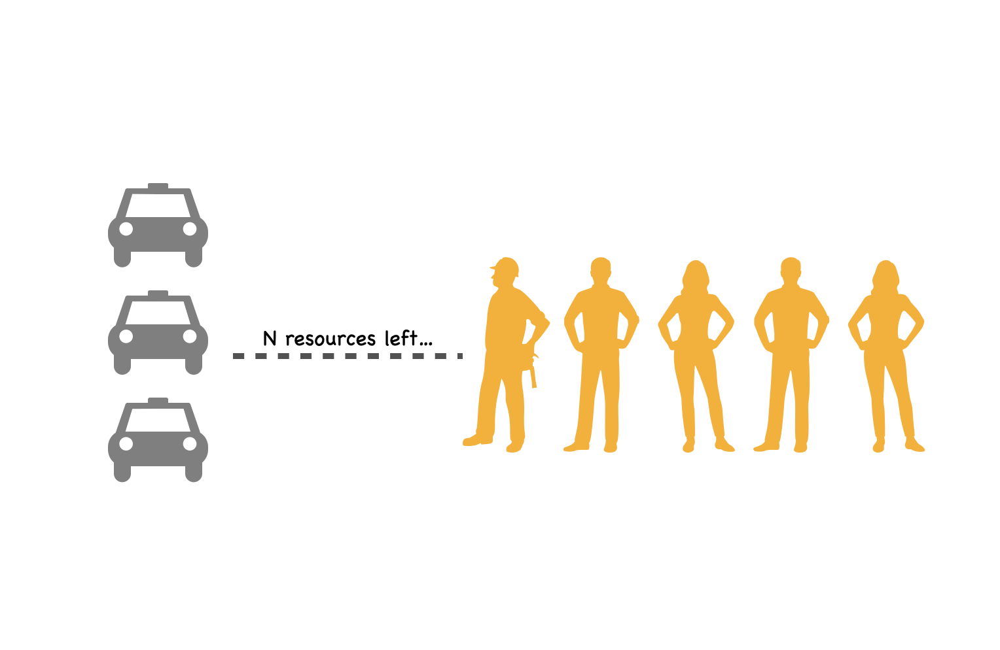
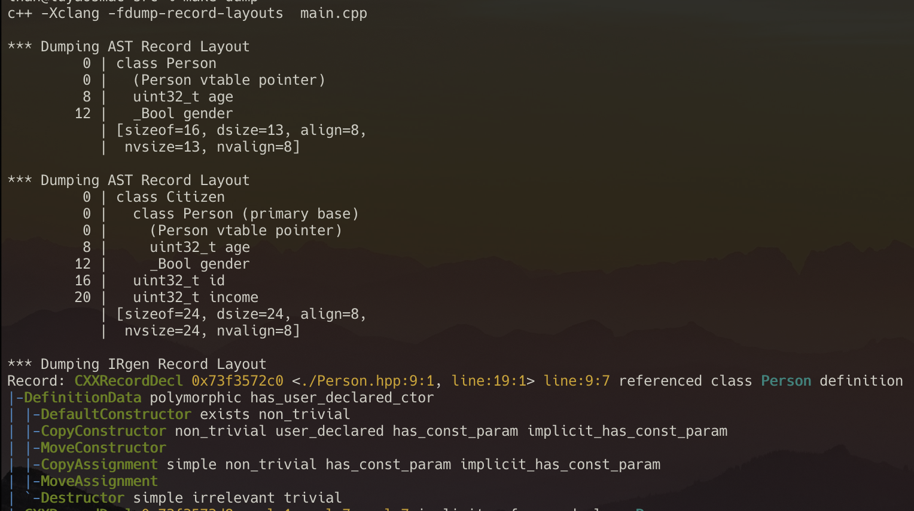
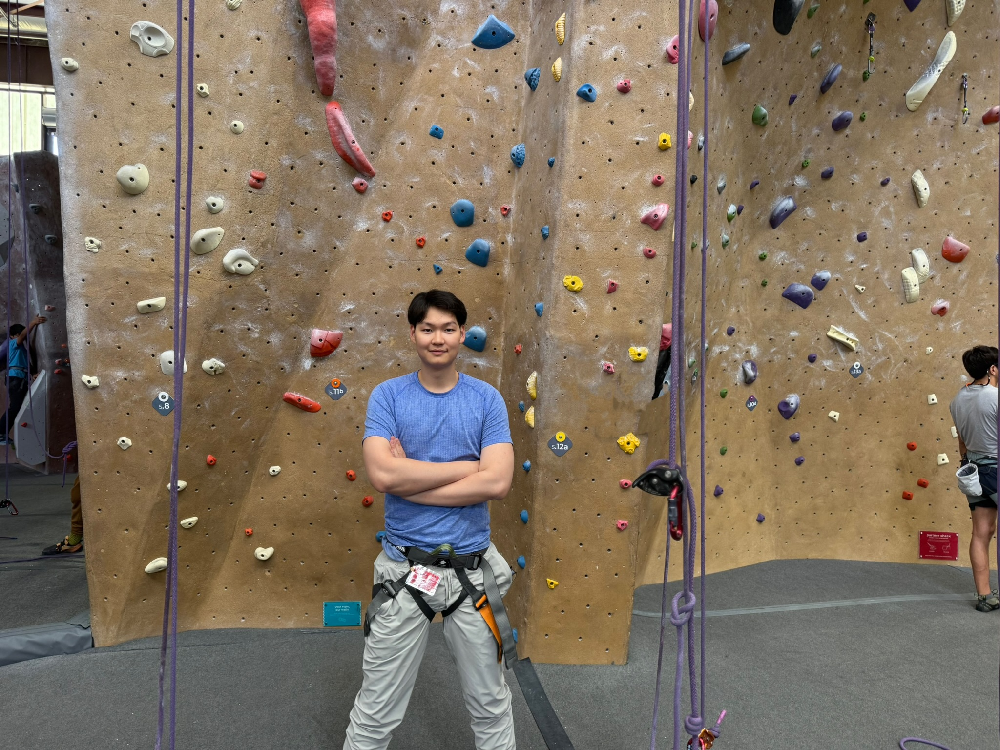
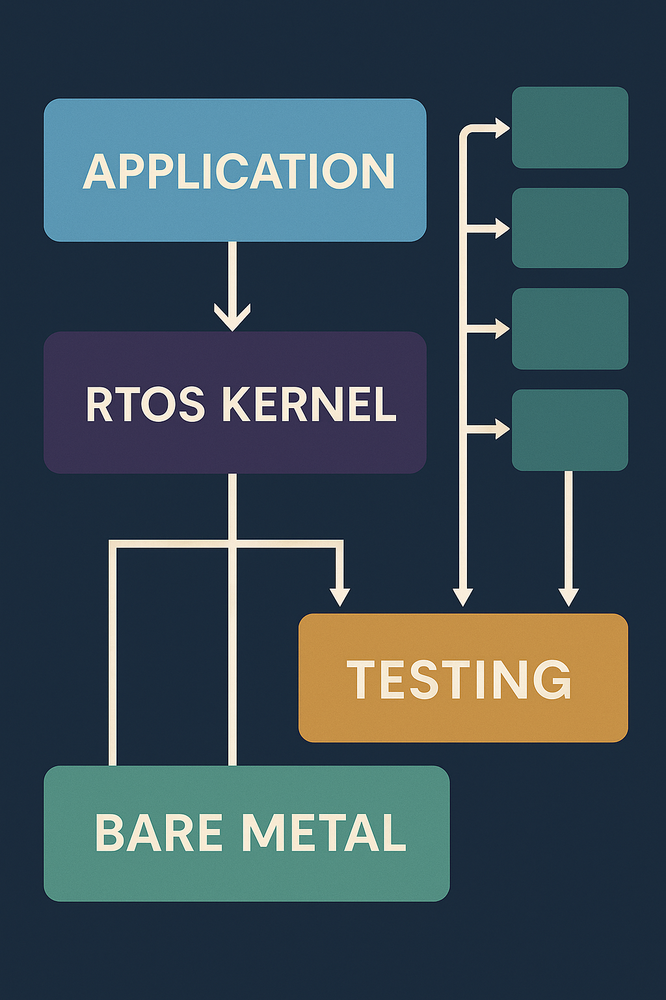
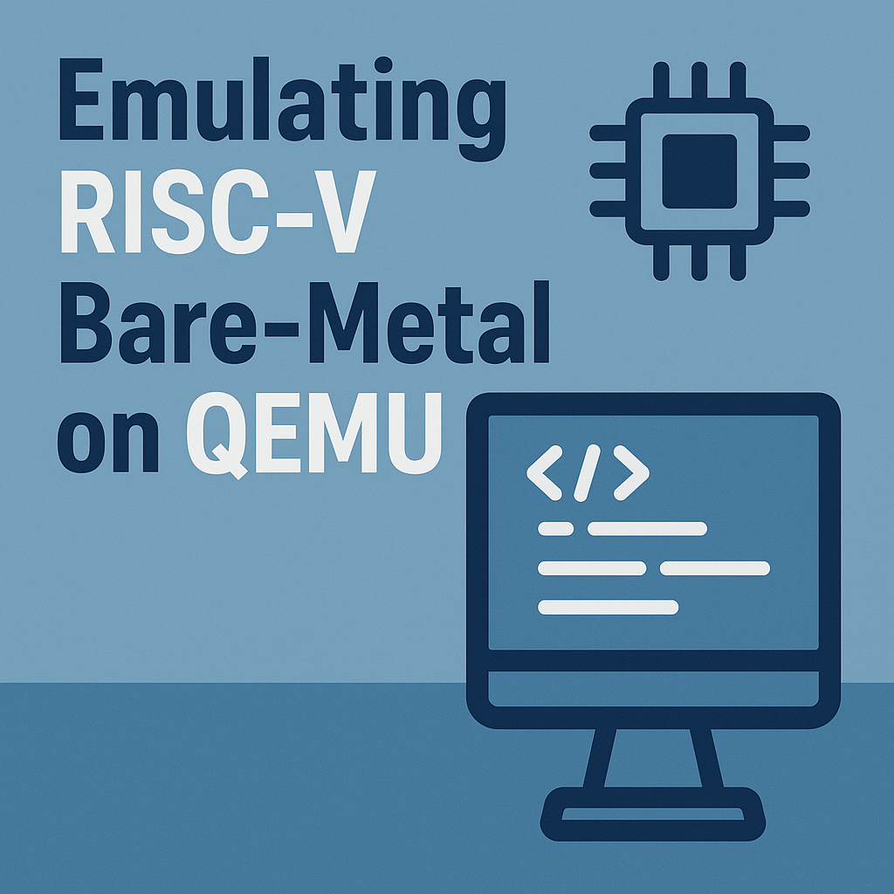

Libcamera's Semaphore Class
Winter 2026
Taking Notes on A Simple Counting Semaphore Implementation in C++
Read full blog →
Winter 2026
Taking Notes on A Simple Counting Semaphore Implementation in C++
Read full blog →
Winter 2026
vtable and vptrs for C++ run-time polymorphism
Read full blog →
Spring 2025
My first climbing experience — the fears, the lessons, and techniques.
Read full blog →Spring 2025
As part of building my own RTOS, I had to deeply understand ARM v7-M/v8-M supervisor call and exception model. Here's a deep dive into the internal mechanisms.
Read full blog →
Summer 2025
In large Projects, modularity in CMake enables clean architecture, parallel development, and fast builds. This article shows how it helps create to create scalable, maintainable software pipelines.
Read full blog →
Summer 2025
Reflecting on challenges and solutions in porting a project to RISC-V on macOS, setting up cross-compilation, fixing linker issues, and running it on QEMU.
Read full blog →